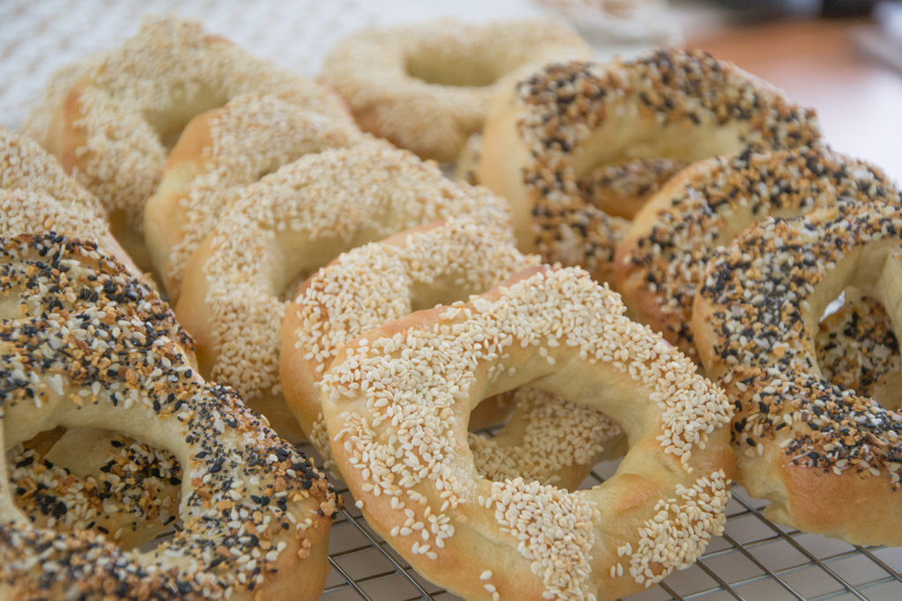

Landmarks

The Notre-Dame Basilica is the crown jewel of Old Montreal and one of the most visited monuments in North America. Built between 1824 and 1829, its unassuming exterior hides a breathtaking interior of deep blue vaulted ceilings adorned with golden stars, intricate wood carvings, and stunning stained glass that depicts the history of the city. While it remains a place of worship and the site of iconic events (like Celine Dion's wedding), it has embraced the modern era with AURA, a world-class immersive light and sound show that uses the church's architecture as a canvas.
Culinary Delights

The Montreal-Style Bagel is the legendary rival to the New York version and a staple of the city's Jewish heritage. Unlike its fluffy American cousin, a Montreal bagel is smaller, denser, and sweeter because the dough is poached in honey-infused water before being baked in a massive wood-fired oven. The result is a chewy, golden-brown crust with a distinct smoky char. The city is famously divided between two 24-hour institutions in the Mile End neighborhood: St-Viateur Bagel and Fairmount Bagel. For the true local experience, buy a bag of "Sesame" fresh from the oven and eat them while they're still hot enough to melt the bag.